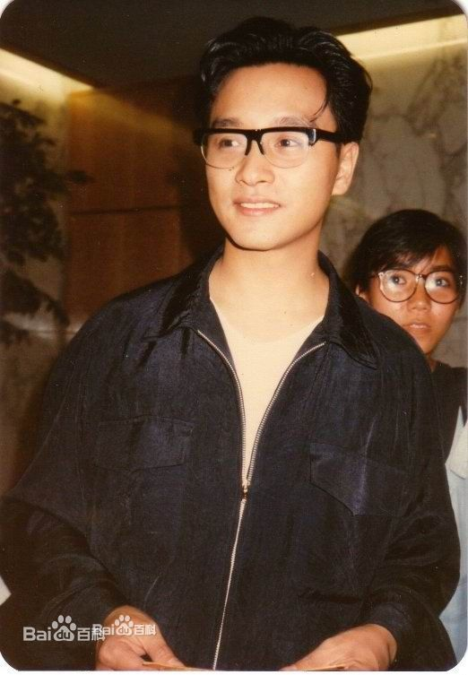

人物评价
演艺方面
张国荣是中国流行文化的指标人物之一（美国《新闻周刊》评）；影视歌全能亚洲巨星；华人演艺圈多栖发展的代表之一。凭借音乐和电影，他在亚洲获得了很高的人气，他在《霸王别姬》中的表演为他赢得了世界性的声誉（《大英百科全书》评）。他是一位成功的歌手、演员、音乐人；演艺圈天赋与勤勉兼具的代表，对华语乐坛和影坛均有很大影响。他在演艺事业上很成功，是一位很有才华和有贡献的艺人。他演技精湛，电影表演在香港演员里是非常突出的几位之一，同时也是一个很好的歌手，舞蹈也很好，且擅于个人创作 ；是一位有着多方面能力的全才（英国《泰晤士报》评）。张国荣敢于尝试不同的表演方式，是一个勇于创新的全能艺人。他是一位才华横溢的艺术家；他在艺术上的成就是很多艺人的榜样。他是亚洲顶级巨星，拥有令人激赏的演艺才华（美国CNN评）。
作为歌手，张国荣是粤语流行音乐的指标性人物之一。他是香港歌坛第一位全方位能快能慢的男歌手；在舞台上声色艺俱全。他凭一曲《风继续吹》成名，之后一步步登上香港歌坛的顶峰。除了对粤语流行音乐贡献良多外，他亦为华语流行音乐在韩国开拓市场做出了贡献。他在亚洲很受欢迎，作为第一个打开韩国唱片市场的粤语歌手，他保持着华语唱片在韩国的销量纪录；打破了只有欧美流行歌手垄断韩国外国乐坛的传统（韩国《亚洲经济》评）。
20世纪80年代，张国荣囊括了香港乐坛的多项大奖，他是首位连续两年同时获得“十大劲歌金曲最受欢迎男歌星奖”和“叱咤乐坛男歌手金奖”的华人歌手；屡获歌坛大奖的张国荣不仅歌唱技艺精湛，才华横溢的他更是一位多面手，从作曲、作词、再到制作他都一一能够胜任。除了在歌唱与词曲创作上有杰出表现外，他还担任了自己多张专辑的唱片监制，剪辑与导演了自己的多个MV，是一位多才多艺的歌手。由他担任执行监制的专辑《Salute》更被乐评人评价是翻唱专辑中的一座高峰。
作为演员，他能演喜剧片、动作片，还可以演文艺片和爱情片，电影《霸王别姬》在世界范围内的成功使他扬名国际（BBC评）；确定了他在亚洲影坛的巨星地位 。张国荣是一位非常优秀的的演员 ；他的表演是华人演员中的典范（影评人罗杰·艾伯评）。从出演喜剧片到武侠片，再到悲剧片，张国荣出众的演技为他赢得了国际性的赞誉（美国《洛杉矶时报》评）。他是一位很好的演员，同时他也是一位很有实力的演员；没有张国荣就没有《霸王别姬》（陈凯歌评）
态度方面

张国荣是一位很敬业的演员（梅婷评）。无论对同辈的艺人还是对身边的工作人员，他都不会以倨傲的态度示人。张国荣很有天赋，但是他还是在努力，从不会因天赋才华而疏懒（黄沾评）。他工作态度一流、勤快、肯合作，没有明星架子，我从来没见过像他那么关心人的大牌明星（高军评）。圈内非常容易沟通的一线演员其实还是张国荣，他会很虚心地听别人的意见，然后用一种最佳的方式让双方都满意（潘文杰评价）
提携后辈
张国荣生前一直热衷于提携演艺圈的后辈 ，港台众多艺人都曾经得到过他的帮助 。他为人很好，香港演艺圈里，很难得看到他这样的绝类，有这样的胸襟去对待别人，我会把他当作是一个模范，知道以后怎么去对待晚辈（王杰评）。他很懂得照顾、关心别人（王家卫评）。他既尊敬前辈，亦爱护后辈，从未见过一个成名的艺人像他那样疼惜后辈（黄沾评）。他对待身边的工作人员和晚辈都非常有耐心，跟他相处就会发现他很照顾新人（王力宏评）
人品评价
从人格上来说，张国荣是一个伟大的演员（梅婷评）。在香港演艺圈像张国荣这么重情义的人不多（林青霞评）。演唱会结束后，近一百位工作人员每人都收到一份张国荣亲手挑选的名牌礼物，礼物上有他亲手写的上款和下款，而他送礼物的时候，对每位工作人员，无论其岗位是大还是小，他都唤得出他们的名字，有两位同名的他亦分得非常清楚，完全没有弄错（黄沾评）。他是个很善良的人，除了才华，他的为人更令人敬佩（吴宇森评）

张国荣是个很有爱心的人；他的为人让人终身难忘（张曼玲评）。他会帮演技生疏的演员对戏，讲笑话让心情不好的同事开心，为患病的工作人员安排医生，给生活困窘的小龙套找活干（黄百鸣评）。他是个对人很真的人，无论在友情、爱情等方面，这个“真”字和“爱”字都很明显地呈现出来（唐弈聪评）
演艺圈的人情很淡薄，但是张国荣作为身价不菲的巨星，对人完全不会提钱，只讲情谊，这种相交相知的朋友很难再认识了（刘培基评）。张国荣生前热衷慈善，他为人低调，做慈善不愿意声张，他做过的很多善事都是悄悄进行，不愿因媒体的大肆报道而使其变味